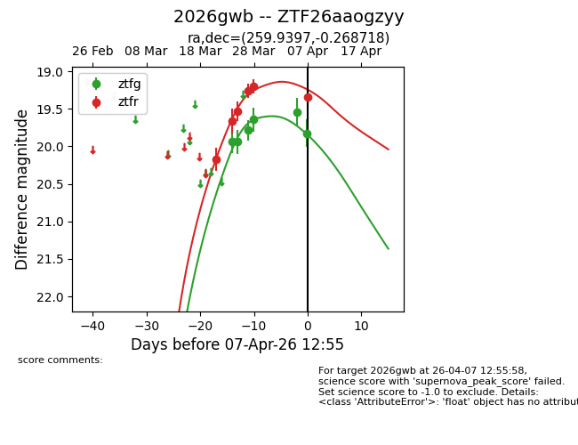
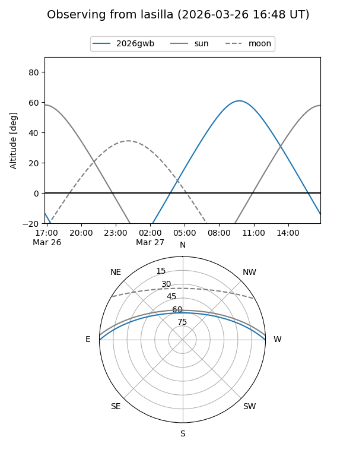
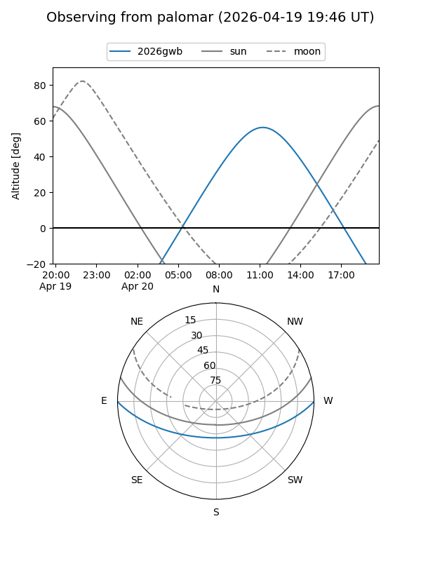
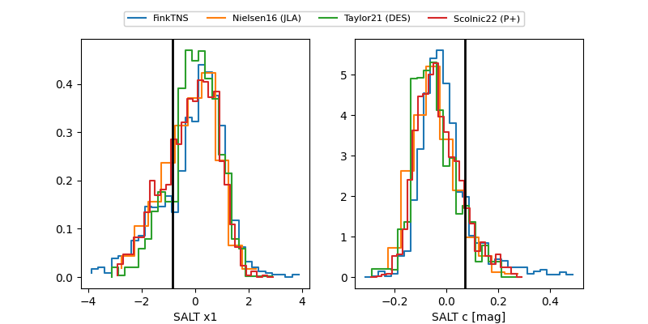

2026gwb
Target 2026gwb at 2026-04-07 13:00
Aliases and brokers:
FINK: link
Lasair: link
ALeRCE: link
TNS: link
YSE: link
alt names
ZTF26aaogzyy (ztf,fink_ztf)
2026gwb (tns,yse)
Coordinates:
equatorial (ra, dec) = 259.9397,-0.26872
equatorial (HMS+DMS) = 17:19:45.52,-00:16:07.39
galactic (l, b) = (21.7690,+20.14864)
Flags:
Photometry:
last ztfg=19.83, ztfr=19.35
6 ztfg, 6 ztfr detections
Lightcurve

Visibility


Additional plots
